GALERIA DE FOTOS
 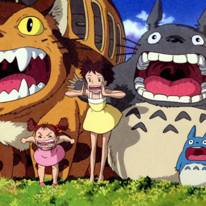
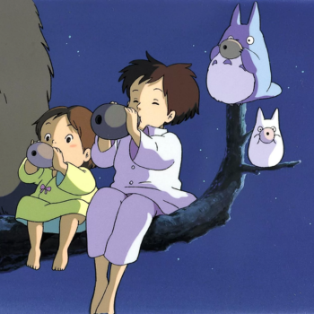
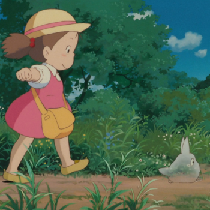
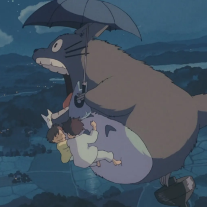
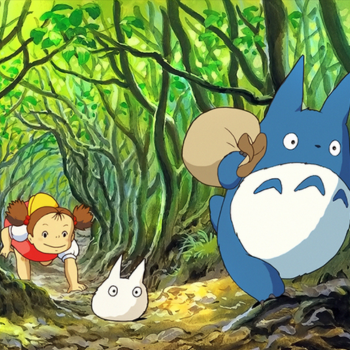
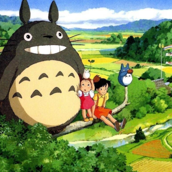
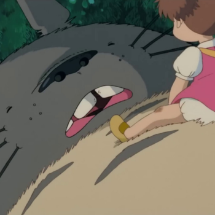
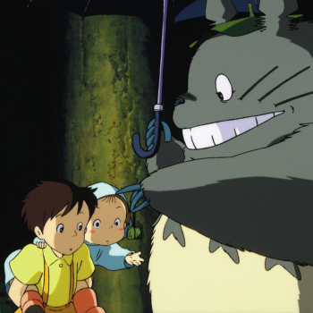
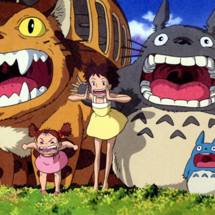
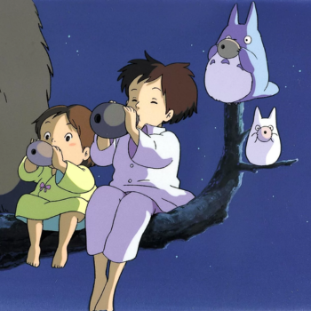
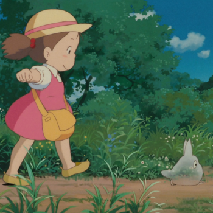
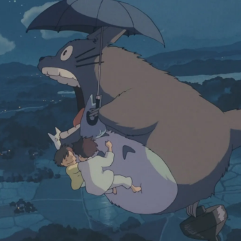
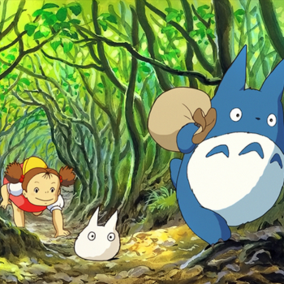
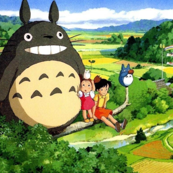
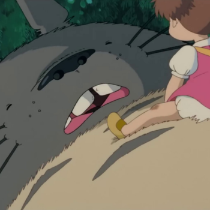
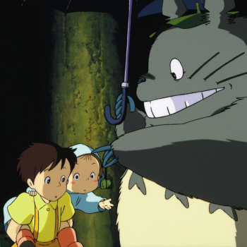
1988 | 86 min | fantasia
Meu Amigo Totoro é um filme animado de fantasia escrito e dirigido por Hayao Miyazaki e produzido pelo Studio Ghibli em 1988. O filme conta a historia das duas jovens filhas (Satsuki e Mei) de um professor e suas aventuras com espíritos da floresta amigáveis no Japão pós-guerra rural. Depois de escrever e produzir O Castelo no Céu (1986), Hayao Miyazaki começou a dirigir Meu Amigo Totoro para o Studio Ghibli. A produção de Miyazaki acompanhou a produção de Túmulo dos Vagalumes, de seu colega Isao Takahata. O filme de Miyazaki foi financiado pelo produtor executivo Yasuyoshi Tokuma. Ambos foram lançados simultâneamente em 1988. O lançamento em conjunto foi considerado “uma das duplas em cartaz mais emocionantes e notáveis já oferecidas ao público do cinema. ”
Duas meninas se mudam com o pai para o interior do Japão, com o objetivo de ficar perto da mãe, que está internada em um hospital. Lá, elas viverão muitas aventuras ao lado de um simpático espírito protetor da floresta chamado Totoro, que vive em uma canforeira gigante.
No Brasil o filme chegou em BluRay e DVD através do box da Coleção Studio Ghibli Vol. 1 lançado pela distribuidora Versátil Home Video em versão legendada. Atualmente está disponível junto a mais outros 20 filmes do Studio Ghibli na plataforma de streaming Netflix.
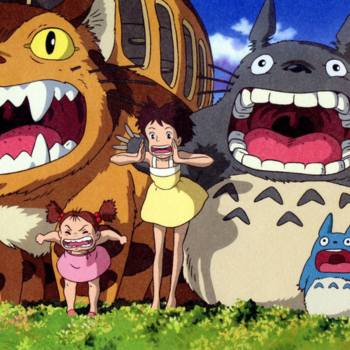
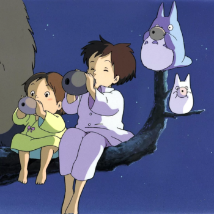
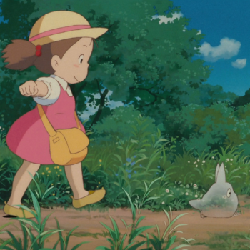
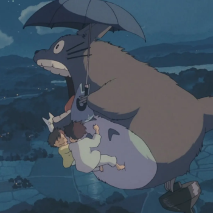
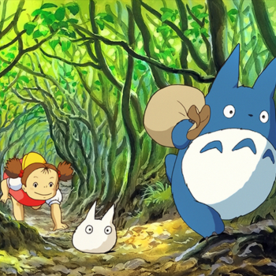
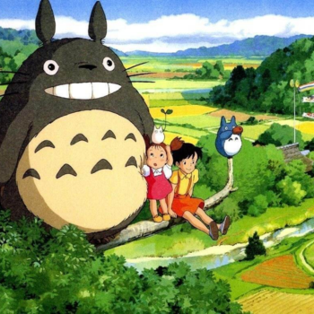
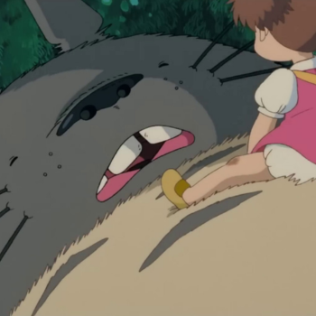
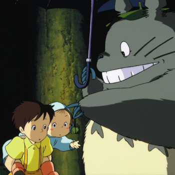